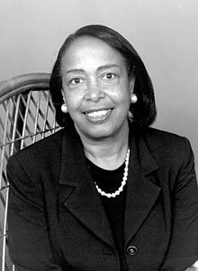
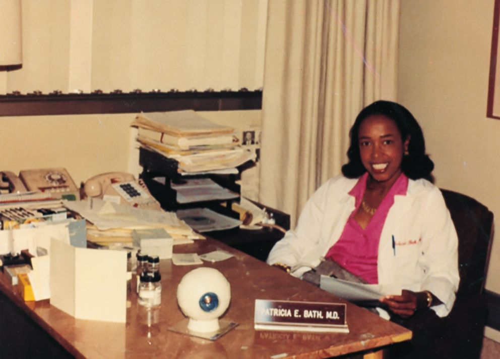

Early Life
Patricia Bath was born on November 4, 1942 in the small city of Harlem, New York. Her parents were Rupert and Gladys Bath who always encouraged her to pursue her education. Bath's parents believed education was very important and always pushed her to engage in her academic interests. Her father taught her about the wonders of the world and the glory of traveling the world, this sparked her in travels and culture. Bath's mother sparked her interest in chemistry by buying her a chemistry set. Therefore, with all her hard work she became one of the few lucky kids to attend a cancer research workshop at age 16. At the event, Dr. Robert Benard was so impressed with her work he helped her win Mademoiselle magazine's Merit award in 1960. Bath graduated highschool in two years. She then went to Hunter College where she got her bachelor's degree by 1964. Bath then journeyed on to Howard University to pursue her medical career, graduated in 1968 and got an intership at Harlem Hospital. Later, she sought out an fellowship in ophthalmology at Columbia University in which she discovered useful research.
Career
Bath got a head start on her ophthalmology career during her fellowship at Columbia University. In 1973, she became the first African American woman to complete her residency in ophthalmology. Within the next year, she moved to California to become a surgical assistant at Charles R. Drew University and University of California, Los Angeles. In 1975, she became the first female employee Department of Ophthalmology at UCLA's Jules Stein Eye Institute. In 1976, she co-founded the American Institute for the Prevention of Blindness. In 1983, Bath helped create the Ophthalmology Residency Training program at UCLA-Drew. She also finished creating the Laserphaco Probe. Bath retired from her position at UCLA in 1993 and was named "Howard University Pioneer in Academic Medicine."